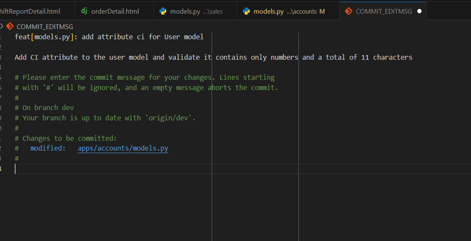
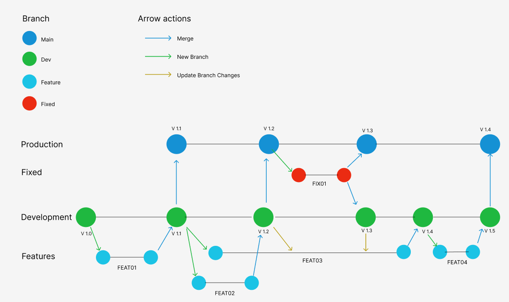

Flujo de trabajo usando GitHub y tareas asignadas
Objetivo
1. Tener un mejor control sobre la vida del software.
2. Crear un flujo de trabajo organizado.
3. Crear un documento de trabajo organizado para nuevos integrantes.
Puntos claves a tener
1. Conocimiento de Github y uso de Git.
2. Conocimiento de GitHub Flow. ( opcional )
3. Conventional commits. ( opcional ).
GITHUB
GitHub es una plataforma en línea que funciona como un repositorio centralizado para almacenar y gestionar código fuente de programas y aplicaciones . Es la plataforma más importante del mundo para el desarrollo colaborativo de software y está diseñada específicamente para alojar proyectos utilizando el sistema de control de versiones Git.
GITHUB FLOW
GitHub Flow es un flujo de trabajo simplificado diseñado específicamente para el desarrollo y despliegue continuo de software . Este método está optimizado para equipos que necesitan publicar pequeñas actualizaciones frecuentemente, como es común en aplicaciones web modernas.
Componentes Principales
1. Rama Principal (main)
- Siempre refleja un estado completamente funcional y listo para producción
- Es la rama definitiva del proyecto
- Todo código en main debe estar probado y listo para usar
2. Rama de desarrollo (dev)
- Permite probar integraciones antes de llegar a producción
- Facilita la gestión de múltiples features simultáneos
- Reduce riesgos en main al tener un ambiente de prueba
3. Rama de funcionalidades (features)
- Se crean desde dev para nuevas características
- Son temporales y se eliminan después de mergear
- Permiten trabajar en características de forma independiente
Conventional Commits
Los Conventional Commits son un estándar para escribir mensajes de commit que sigue un formato específico y estructurado. Este formato ayuda a mantener un historial de cambios claro y consistente en el repositorio.
Formato base
tipo(scope): breve descripción
[cuerpo opcional]
Tipos Principales
1. build: Cambios que tienen relación con el despliegue del proyecto 2. doc: Cambios que tienen efecto en la documentación del proyecto 3. feat: Nueva funcionalidad 4. fix: Corregir error 5. test: Añadir o corregir un archivo de test 6. ref: Cambio de código que no representa un fix o feat (cambio de nombre de una variable por ejemplo) 7. perf: Cambios mejoran el código existente 8. revert: Cambios que representan revertir cambios realizados 9. conf: Cambios en los archivos de configuración del proyecto (ejemplo: settings)
Ejemplo de uso
0. # Nuevo feature
1. feat(auth): agregar autenticación con OAuth
2.
3. # Fix de bug
4. fix(api): corregir error en endpoint de usuarios
5.
6. # Documentación
7. docs(readme): actualizar instrucciones de instalación
8.
9. # Refactorización
10. refactor(utils): mejorar manejo de errores en validaciones
11.
12. # Tests
13. test(auth): agregar pruebas unitarias para login
14.
15. # Cambio menor
16. chore: actualizar dependencias

Para mantener un sistema coherente, necesitamos establecer convenciones claras para cada elemento:
1. Identificador de Tarea:
Formato: TIPO##customname (donde ## es un número secuencial y customname es un nombre identificativo asociado a la funcionalidad)
Formato: * FEAT01 - Para nuevas funcionalidades * FIX02 - Para correcciones de bugs * DOCS03 - Para cambios en documentación
2. Nombre de rama: * Debe coincidir exactamente con el ID de la tarea * Ejemplo: Si la tarea es FEAT01 del ejemplo anteriror contiene la creacion de la funcionalidad de loguear usuario, la rama será FEAT01/login-authentication
3. Mensaje de commit: * Debe seguir el formato Conventional Commits * Tipo debe corresponder al prefijo de la tarea * Descripción debe ser concisa y descriptiva
Ejemplos Prácticos
1. Nueva Funcionalidad
Tarea: FEAT01
Descripción: Create login authentication
Rama: git checkout -b FEAT01/login-authentication
Encabezado:
feat(account): create login authentication
Cuerpo:
- Agregar funcionalidad de loguar usuario
- Implementar validaciones principales
2. Corrección de Bug
Tarea: FIX02
Descripción: Corregir la validación del atributo ci en el modelo usuario
Rama: git checkout -b FIX02/ci-validation
Encabezado:
fix(account/model): ci validation in User Model
Cuerpo:
- Corregir problema de validación del atributo ci
- Agregar validación de solo números y máximo 11 caracteres
Ejemplo de un flujo de ramas
